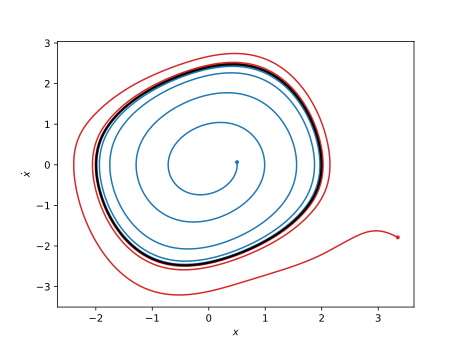
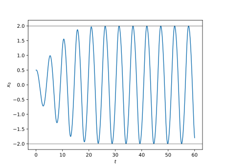

Van der Pol oscillator
MMS example on a Van der Pol oscillator. This configuration is very close from that studied by Nayfeh and Mook [2], section 3.3.4.
System description

Illustration of a Van der Pol oscillator.
The system’s equation is
where
\(x\) is the oscillator’s coordinate,
\(t\) is the time,
\(\dot{(\bullet)} = \mathrm{d}(\bullet)/\mathrm{d}t\) is a time derivative,
\(\omega_0\) is the oscillator’s natural frequency,
\(\mu\) is the linear and nonlinear damping coefficient.
A parametric response around the oscillator’s frequency is sought so the frequency is set to
where
\(\epsilon\) is a small parameter involved in the MMS,
\(\sigma\) is the detuning wrt the reference frequency \(\omega_0\).
The parameter \(\mu = \epsilon \tilde{\mu}\) is then scaled such that
to indicate that linear and nonlinear dampings are weak.
Code description
The script below allows to
Construct the dynamical system.
Apply the MMS to the system,
Solve the modulation equations (yields the transient response),
Evaluate the MMS results at steady state,
Solve the steady state modulation equations (yields the limit cycle),
Evaluate the symbolic expressions for given numerical parameters and plot the limit cycle and two trajectories in the phase portrait.
1# -*- coding: utf-8 -*-
2
3#%% Imports and initialisation
4from sympy import symbols, Function, sympify
5from sympy.physics.vector.printing import init_vprinting
6init_vprinting(use_latex=True, forecolor='White')
7from oscilate import MMS
8
9# Parameters and variables
10omega0, c = symbols(r'\omega_0, c', real=True, positive=True)
11mu = symbols(r'\mu', real=True, positive=True)
12t = symbols('t')
13x = Function(r'x', real=True)(t)
14
15# Dynamical system
16Eq = x.diff(t,2) + omega0**2*x + mu*(x**2 - 1 )*x.diff(t)
17dyn = MMS.dyn_sys.Dynamical_system(t, x, Eq, omega0, F=0)
18
19# Initialisation of the MMS sytem
20eps = symbols(r"\epsilon", real=True, positive=True) # Small parameter epsilon
21Ne = 2 # Order of the expansions
22omega_ref = sympify(1) # Reference frequency
23ratio_omegaMMS = 1 # Look for a solution around omega_ref
24
25sigma0 = symbols(r"\sigma_0", real=True) # Detuning of omega0 wrt 1
26detunings = [sigma0] # Detuning of the oscillator's frequency
27sub_sigma0 = [(sigma0, omega0-1)] # Only for display purposes
28
29param_to_scale = (mu, sigma0)
30scaling = (1 , 1 )
31param_scaled, sub_scaling = MMS.scale_parameters(param_to_scale, scaling, eps)
32
33kwargs_mms = dict(ratio_omegaMMS=ratio_omegaMMS, ratio_omega_osc=[1], detunings=detunings)
34mms = MMS.Multiple_scales_oscillator(dyn, eps, Ne, omega_ref, sub_scaling, **kwargs_mms)
35
36# Application of the MMS
37mms.apply_MMS(orders_polar="all")
38
39# Transient analysis
40solve_dof = 0
41mms.solve_transient(solve_dof=solve_dof)
42
43# Evaluation at steady state
44ss = MMS.Steady_state(mms)
45
46# Steady state analysis - amplitude and frequency
47ss.solve_LC(solve_dof=solve_dof)
48
49# Steady state analysis - Stability analysis
50J = ss.Jacobian_polar() # Jacobian of the slow time system (in polar coordinates)
51JSS = J.applyfunc(lambda expr: expr.subs(ss.sub.sub_solve_LC).subs(ss.sub.sub_scaling_back)) # Jacobian evaluated on the steady state solution
52eigvals = list(JSS.eigenvals().keys()) # Eigenvalues
53eigvecs = list([item[2][0] for item in JSS.eigenvects()]) # Eigenvectors
54
55# Plot the steady state results
56# -----------------------------
57
58# Set parameters' numerical values
59import numpy as np
60omega0 = 0.8
61param = [(sigma0, 1-omega0),
62 (mu, 0.3)]
63
64# Limit cycle
65LC = MMS.visualisation.Limit_cycle(mms, ss, param)
66fig = LC.plot_PP(c="k")
67ax = fig.get_axes()[0]
68
69# Transient response - internal trajectory
70param_IC = [(list(mms.sol_transient.IC["a"].values())[0], 0.5),
71 (list(mms.sol_transient.IC["beta"].values())[0], 0)]
72param_transient = param + [(mms.t, np.linspace(0, 60, 10000))] + param_IC
73TR_in = MMS.visualisation.Transient_response(mms, param_transient)
74ax.plot(TR_in.x, TR_in.dxdt, c="tab:blue")
75ax.plot(TR_in.x[0], TR_in.dxdt[0], marker="o", mfc="tab:blue", mec="none", ms=4)
76
77# Transient response - external trajectory
78param_IC = [(list(mms.sol_transient.IC["a"].values())[0], 3.5),
79 (list(mms.sol_transient.IC["beta"].values())[0], 0)]
80param_transient = param + [(mms.t, np.linspace(0, 60, 10000))] + param_IC
81TR_ex = MMS.visualisation.Transient_response(mms, param_transient)
82ax.plot(TR_ex.x, TR_ex.dxdt, c="tab:red")
83ax.plot(TR_ex.x[0], TR_ex.dxdt[0], marker="o", mfc="tab:red", mec="none", ms=4)
84
85# Time signal (internal trajectory and LC)
86figt = TR_in.plot_time()
87axt = figt.get_axes()[0]
88axt.axhline(LC.a, c="k", lw=0.5)
89axt.axhline(-LC.a, c="k", lw=0.5)
90
91# %%
Plot outputs
The plot outputs shown below are generated from the code above.
Phase portrait
The figure below displays the phase portrait of the Van der Pol oscillator. Three different trajectories are shown: the limit cycle (black), an external one (red) and an internal one (blue). The limit cycle is stable, such that the trajectories are converging towards it.
{kind=link}

Phase portrait of the Van der Pol oscillator.
Transient time signal
The figure below displays the time signal associated to the transient, internal trajectory shown in the phase portrait of the Van der Pol oscillator. The horizontal black lines are associated to the amplitude on the limit cycle.
{kind=link}

Transient response of the Van der Pol oscillator.